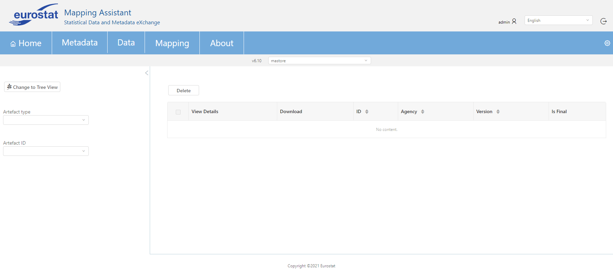
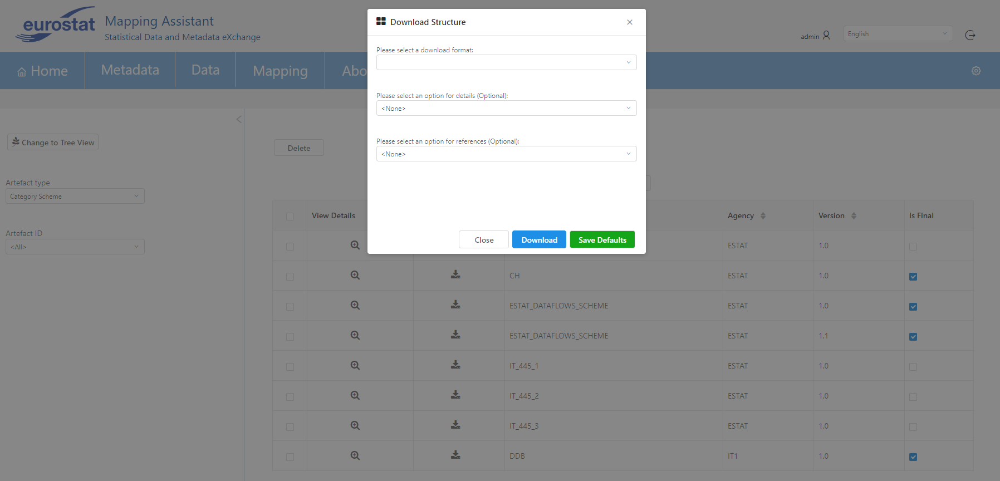
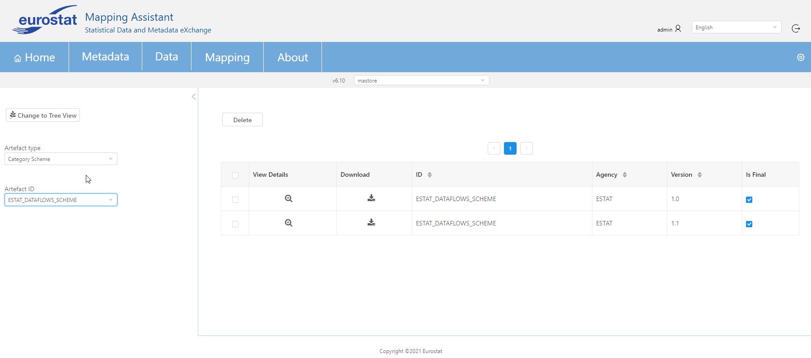
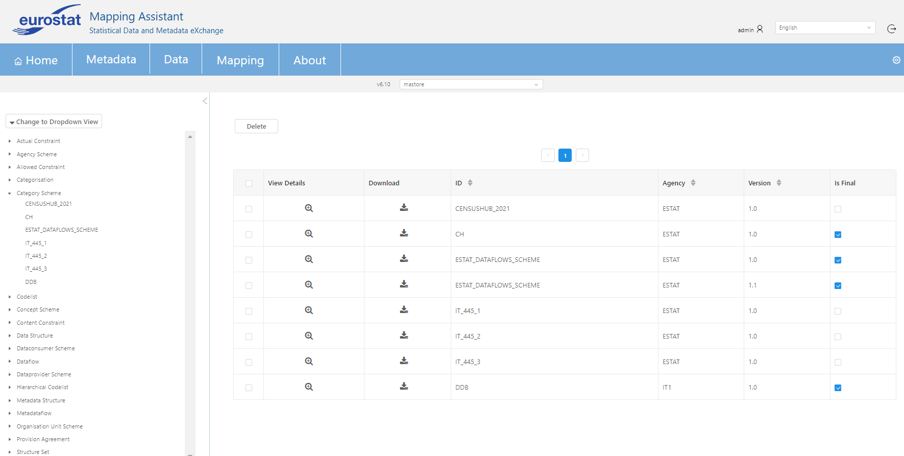

This screen can be used in order to download or check detailed info (ID, agency, version etc.) of an artefact. Initially an artefact type should be selected from the drop down menu Artefact type. On the right side of the screen a table demonstrates all artefacts that are stored in the database with this artefact type. Additionally, the user can delete an artefact by clicking the relevant check box (in the same row with the artefact) and then pressing the delete button above the table of the results.

After selecting an artefact type the user can see the details of an artefact (by clicking the button with the zoom icon) or he can also download it by clicking the relevant button. If the download button is clicked, a new pop up dialog appears as seen in the image below. This pop up dialog provides the following options:
| NAME | OPTIONS |
|---|---|
| DOWNLOAD FORMAT | JSON, XML 2.0, XML 2.1 |
| DETAILS (optional) | allcompletestubs, allstubs, referencecompletestubs, referencepartial, referencestubs |
| REFERENCES (optional) | agencyscheme, all, attachmentconstraint, categorisation, categoryscheme, children, codelist, conceptscheme, contentconstraint, dataconsumerscheme, dataflow, dataproviderscheme, datastructure, descedants, hierarcicalcodelist, metadataflow, metadastructure, none, organisationscheme, organisationunitscheme, parents, parentsandsiblings, process, provisionagreement, reportingtaxonomy, structureset |
Below you can find a detailed explanation of the "Details" options:
allcompletestubs: All artefacts should be returned as complete stubs, containing identification information, the artefacts' name, description, annotations and isFinal information.
allstubs: All artefacts should be returned as stubs, containing only identification information, as well as the artefacts' name.
referencecompletestubs: Referenced artefacts should be returned as complete stubs, containing identification information, the artefacts' name, description, annotations and isFinal information.
referencepartial: Referenced item schemes should only include items used by the artefact to be returned. For example, a concept scheme would only contain the concepts used in a DSD, and its isPartial flag would be set to true. Likewise, if a dataflow has been constrained, then the codelists referenced by the DSD referenced by the dataflow should only contain the codes allowed by the content constraint.
referencestubs: Referenced artefacts should be returned as stubs, containing only identification information, as well as the artefacts' name.
After filling all the needed options the user can click the download button. Furthermore, the Save Defaults button only appears if the user has admin rights. This will save the currently selected download options as the default options for the next user that attempts to download.

Moreover, the second drop down menu Artefact ID can be used in order to filter the results by artefact ID. As it can be seen in the image below, category scheme with id "ESTAT_DATAFLOWS_SCHEME" is selected and as a result only category schemes with this id appear in the table that contains the results.

In the top left side of the screen there is a button Change to Tree View which demonstrates all artefacts by artefact type in a tree view. For example, if the category scheme is selected (like the image below) all category schemes will be shown in the next tree level.
